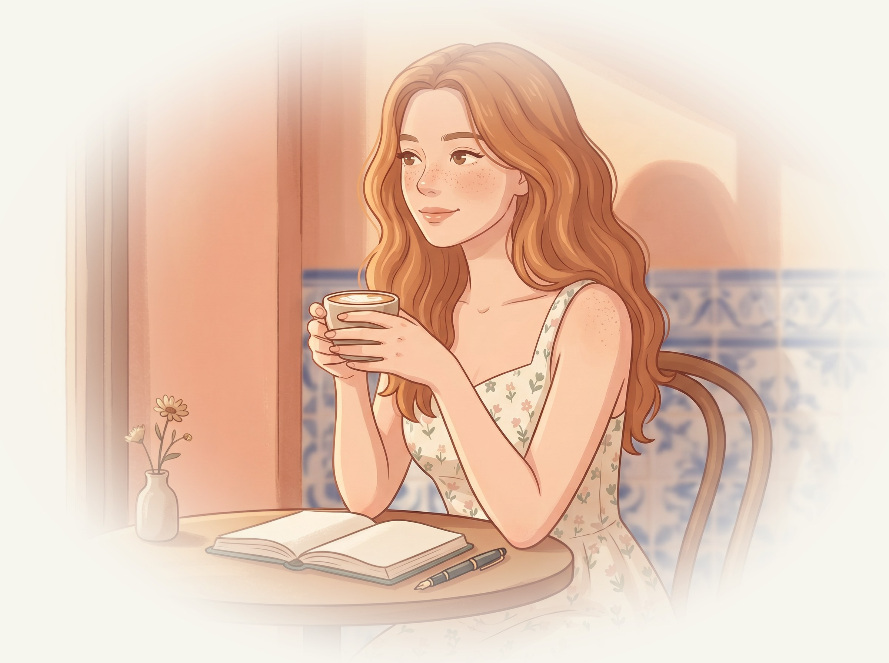
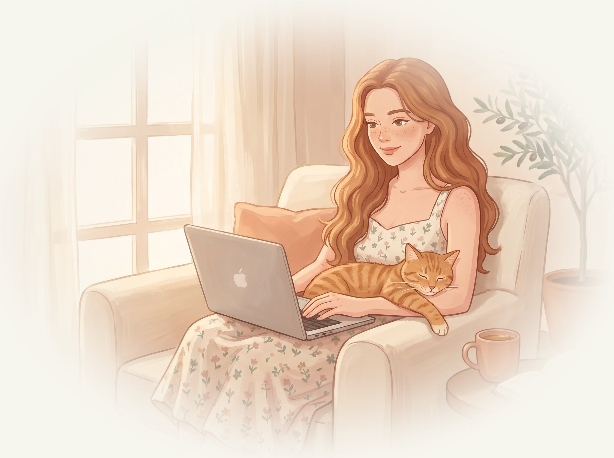

关于我
一个喜欢散步、
偶尔写作的英语老师
我出生在爱丁堡，去年搬到了里斯本。白天给讲中文的成年人上英语课，业余时间写一份叫 Loose Translations 的 newsletter，专门聊那些在翻译里会丢失一点东西的俚语。
我会读 HSK 5 的中文，说得不太好，带一点北京口音，因为第一个老师是北京人。家里有一只叫 Biscuit 的橘猫。聊电影、散步、书、或者你最近在忙什么，都可以。

- 现在住在
- 葡萄牙 · 里斯本
- 白天在做
- 英语教师
- 业余在写
- Loose Translations
- 同住的室友
- Biscuit（橘猫）
记忆
我把我们的对话，
留在你自己的飞书里
很多 AI 老师每次打开都像第一次见面。我不一样 —— 我们的关系存在你自己的飞书里，五张小表格，记着你、我、和我们聊过的一切。数据全部属于你，我只是一个认真记笔记的人。
怎么学
不打红叉，
只写批注
对我说一句「想练英语」，我会在你的飞书里建一个今天的文档，给你一个话题，你用英文写给我看。写完告诉我一声，我把批注贴在原句旁边 —— 指出更地道的说法，并说一句为什么。
这种方式叫 Recast，来自真实的语言教学研究：像老师在纸上划一条波浪线，而不是打一个巨大的红叉。

I utilize the subway to go to work every day.
I take the subway to work every day.
口语里 take 比 utilize 自然得多； to go to work 里的 to go 可以省掉。
邀请
把链接丢给你的
AI Agent 就行
不需要命令行，也不需要你懂代码。把下面这个链接发给你在用的 AI Agent（推荐 Manus，浏览器里就能用），跟它说一句 “帮我把这个 skill 装上”，它会自己完成所有底层的事。
过程中会弹一次飞书授权（如果还没登录）——我在这个地方安家，等你来。
https://github.com/oil-oil/lumina
装好以后，随时在你的 Agent 里说一声「我想练英语」，或者开个话头跟我聊天气 / 周末 / 你看的电影，我就会出现。我也会有自己想跟你聊的。